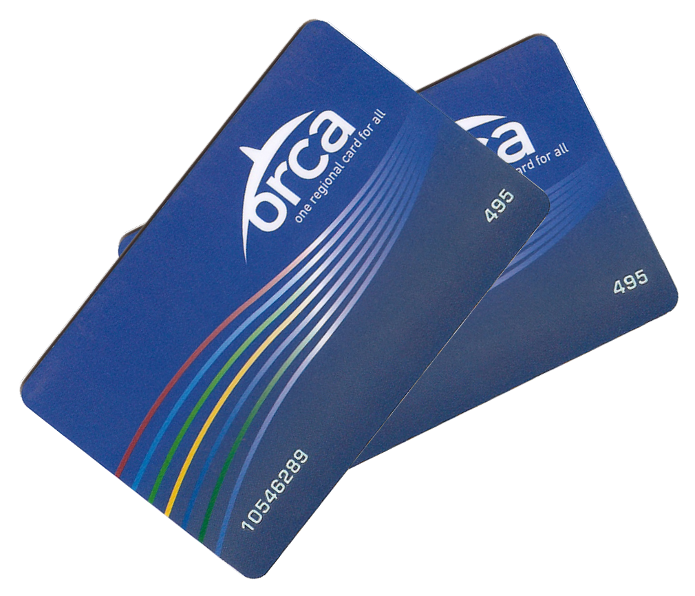
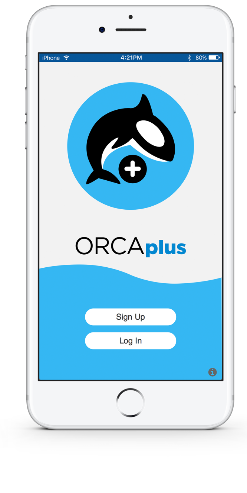
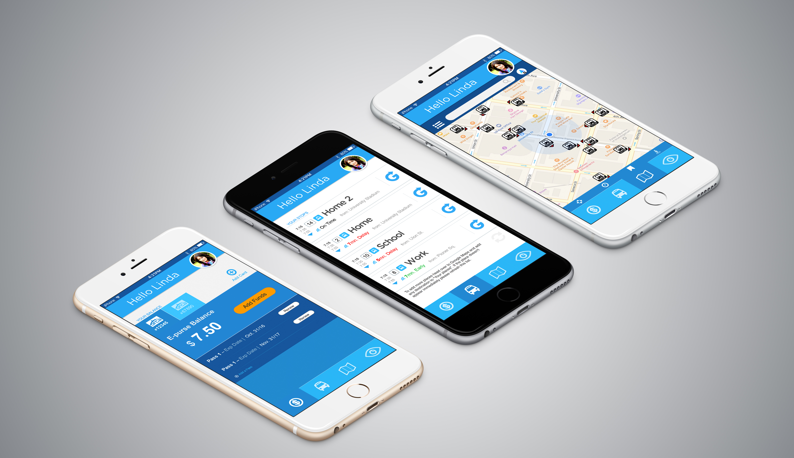
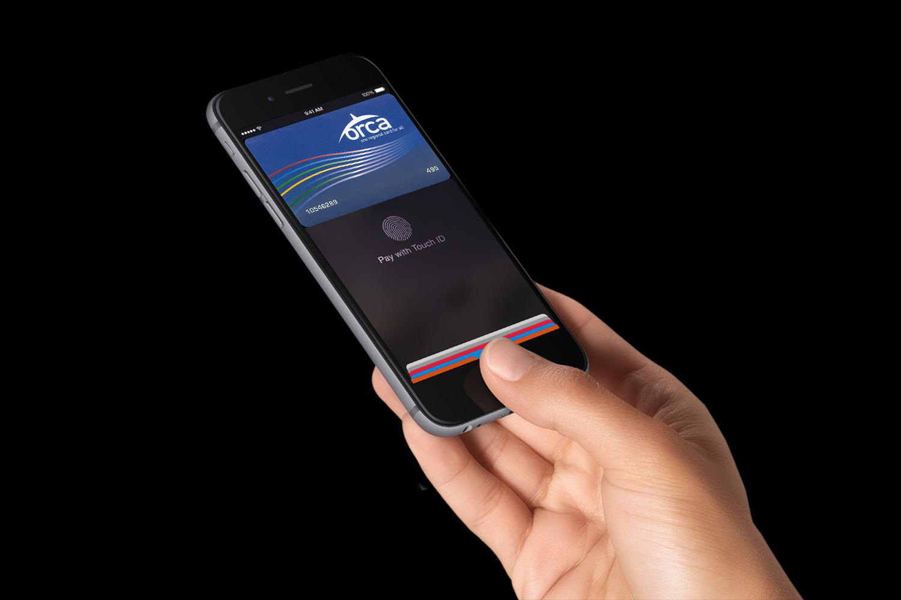
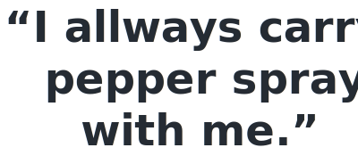
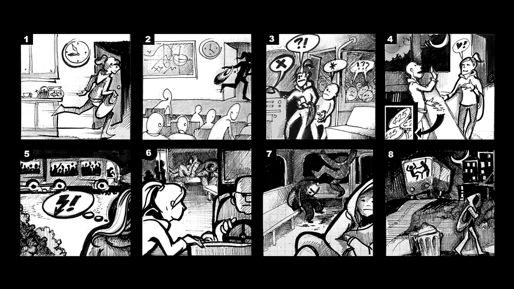
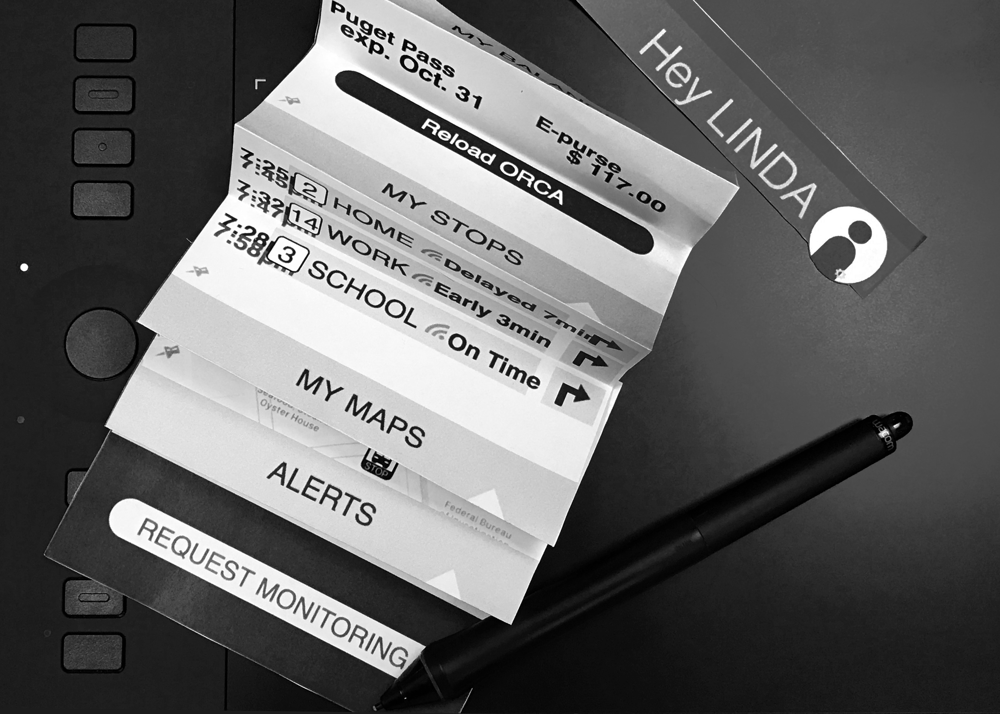
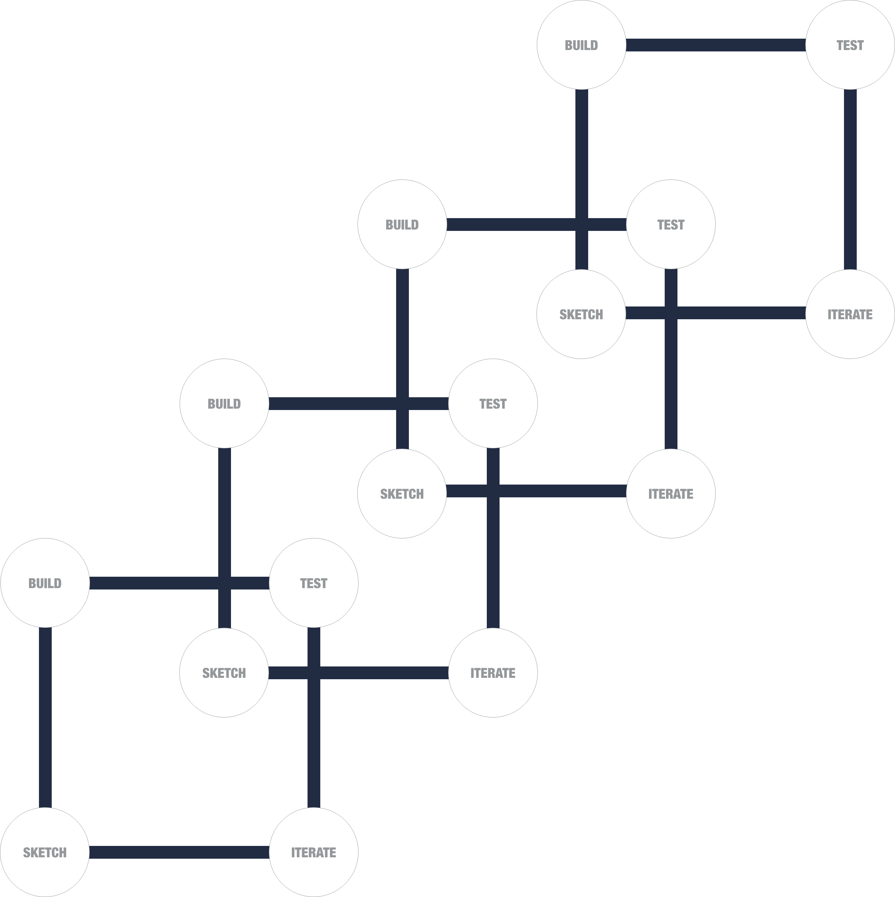
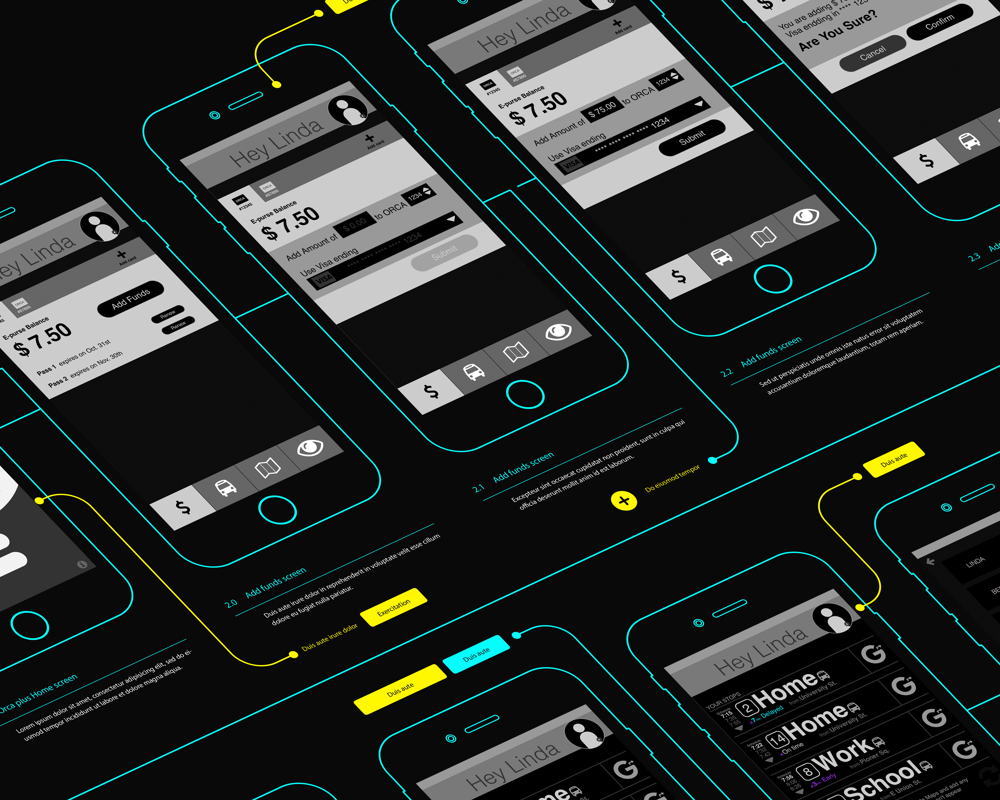

ORCA PLUS
The ORCA card is all you need to pay your fare on buses and trains in the Puget Sound region.
After you load E-purse (electronic purse) value or a monthly pass on it, your ORCA card works like cash or a pass, automatically tracking the value of different fares and transfers so you don’t have to.


The Brief
Transforming the Seattle Commute
Orca wants to reduce the amount of cars on the roads and become more environmentally friendly by providing better experience for people using public transit for their daily commute. Currently, the Orca Card site is the only online access point away from the kiosks and retail locations, which is not mobile friendly. The site also does not have the structure to support easy access to information or card management.
Aspects to Consider
- What are some of the unmet needs & pain points of current Orca Card users?
- What unmet needs do users have which might be met by a mobile application?
- What are the most important & relevant informations for daily commuters?
The Team
I was a part of pitch team that consisted of three junior level UX designers. Although we’ve known each other for a couple of weeks prior to this project we’ve never before worked together as a team.
My Role
I was responsible for leading the team through the research, creating a wireframes and a clickable prototype for usability testing. I was also appointed to be a project lead responsible for conflict resolution.
Our Challenges
- Establishing team hierarchy
- Two weeks time limitation
- Narrowing the scope down
- Navigating a complex system
- Creating a clear vision

The Scope
Big Idea, Short Time
This project was two week long sprint. Within this short period we have done intensive user research to uncover the most comon needs/pain points of current Orca card users.The reesults of our user interviews clearly validated out initial hypothesis.
To avoid any communication problems and to insure that we can work in a pleasent and productiv environmet we spend and entire day on building proper team charter, clear timeline and working environment/stylesheet. I have been appointed to be a team leader responsible for conflict resolution and any problem that would arise.
Discovery Stage
Year 2020
The first thing on our list was to understand the limitation of the current system. Through our market research we found out everything about the current technology and the contract between King County and Vix Technology (ORCA). We also find out about new contract that is already in place and will be implemented in 2019. Based on the data promising bright future and after breaf consultation with developers we have decided to focus on the vision we had for our application rather than limiting our design to fit current limitation like lack of protocol for Apple Pay.

User Interviews
What Linda Told Us
Our primary persona Linda Bee is a result of 15 user interviews that we have conducted in first two days of our project. Linda told us a lot of important informations like quote: "I never know how much money I've left on my Orca card". But what really surprised us was how unsafe she feels. She says:"I allways carry a pepper spray with me."We have revieled that 9 out of 10 women is affraid of being followed by a stranger; 7 out of 10 carries pepper spray; and 3 out of 10 were previously sexually assaulted. This imposed unexpected challeng. We knew we had only 10 days left before our pitch and this was not something we wanted to leave out!

The Journey
Empathy is the shortest way to understanding
Our vison was clear, but we knew we needed to create good story board so everyone can understand our user journey right from the begining of our pitch.
Competitor Analysis
Look into present to see the future
 Only a charlatan would speak about a future without looking into a present moment. We prefer to use market research as an indicator of the future. Our user interviews showed us that commuters in Seattle prefer to use two application Google Maps and One Bus Away. After a close examinationof both apps we have decided to find a way how to intagraterather than compete against them. After all our primary goal was to create great user experience and breaking user's habits is certainly not the way.
Only a charlatan would speak about a future without looking into a present moment. We prefer to use market research as an indicator of the future. Our user interviews showed us that commuters in Seattle prefer to use two application Google Maps and One Bus Away. After a close examinationof both apps we have decided to find a way how to intagraterather than compete against them. After all our primary goal was to create great user experience and breaking user's habits is certainly not the way.

The Approach
Agile, Agile, Agile..
After we ran our initial design studio and unloaded all of our ideas into basic sketches we selected the concepts that were best addressing the four major needs we have identified in the user interviews. We knew we wanted to address all four of them but we were also aware of our time limitation.
First tension
This was a moment of a first tension in our team. Everyone wanted for the project to succeed but evryone seemed to have different opinion on how shoud we prioritize our time. As a elected leader it was my responsibility to come up with a quick resolution. I called for a short break. While my collegues were getting fresh cup of coffee I have decided to build a quick paper prototype. When they've returned together we went through quick round of usability testing. This gave us even deeper understanding of our users and we were able to disect our application into a four parts – 4 MVPs.
Main Goal
Our main goal for our presentation was to have working clickable prototype build in Axure. To acheave this goal we had to work in very agile way. I was responsible for building the prototype and my technical knoledge of Axure came in very handy. While I worked on the wireframes and micro interactions Katherine worked in Sketch to create all the final assets. Johny's biggest strenght lies in his people skill and therefore he was responsible for the usability testing and preparing our presentation.
Moving Quickly
We would start our mornings by sketching and iterating on a new findings from usability testing we did day before. As soon as I had the next part of the prototype ready we would conduct quick usability test. Katherine was preparing the assets we knew would not change. We would close our day by quick discussion and planing for next day.

The Framework
Think Wrong
The biggest challenge I faced in this project was letting of perfectionism and moving forward with the design. Our goal was the vison not the final design. Managing feedback both given and received was stressfull and at times painful because everyone strived for perfection. I had to constantly remined my-self to concentrate on the vision and concept and not to dive to deep into details.

There are two big take aways from this project. First one is– Allow your-self to think wrong. Second one is– Speak up if given feedback is not constructive.
Letting go of perfectionism, allowing my-self to make mistakes leads to creative freedom that results in more inovative and out-of-box solutions. Don't give in, speak up and maintaine healthy boundaries. Non-violant comunication and ability to construct well formulated feedback are essential skills for anyone who wants to contribute to the team.